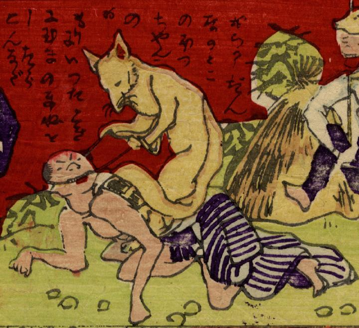

狐；キツネ

狐が四つ這いになった人間に口縄をつけて乗っている。人間はそれでも気安く狐に話しかけている。
出典：親書誌：U426_nichibunken_0271：しん板ばかされ尽；シンパン バカサレズクシ／日付：2014／資源識別子：U426_nichibunken_0271_0001_0000
Copyright (c)2010- International Research Center for Japanese Studies, Kyoto, Japan. All rights reserved.